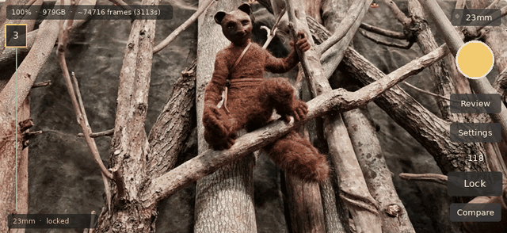
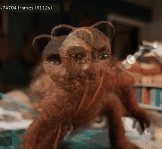

Stop Motion
A camera for films made one frame at a time, made for our stop-motion practice, Lyminalkin. Phones change their minds about every picture; Stop Motion makes the camera decide once and hold to it, so frames shot days apart still match.
一コマずつ作る映像のためのカメラ。私たちのコマ撮りの営み、Lyminalkinのために作った。電話のカメラは一枚ごとに考えを変える。駒撮りはカメラに一度だけ決めさせ、それを守らせる。だから何日も離れて撮ったコマもそろう。
Download komadori.apkkomadori.apkをダウンロードSourceソース

The lockロック
Lock lets the phone decide exposure, focus and color once, reads back what the sensor actually used, and shoots every later frame with those exact numbers. The lock is saved with the film, so closing the app loses nothing. Light can still change, so after each frame the app says if the brightness drifted, and shutter, ISO and warmth can be nudged on top of the lock.
Lockは、露出、ピント、色を電話に一度だけ決めさせ、センサーが実際に使った値を読み返し、それからのコマをすべてそのとおりの値で撮る。ロックは作品といっしょに保存されるので、アプリを閉じても何も失われない。それでも光は変わるので、コマを撮るたびに明るさがずれていないかを知らせ、ロックの上からシャッター、ISO、あたたかさを少し動かせる。
Thirty frames each way, drawn to the size of the app's own test. Left on auto, each frame's average brightness wandered over a spread of 12.5 levels; locked, over 2.2 at most. The big square plays the frames in turn; the strip under it is all thirty side by side.それぞれ三十コマ。アプリ自身の試しの大きさで描いた。自動のままでは、コマごとの平均の明るさが12.5の幅でゆれ、ロックでは多くても2.2。大きな四角はコマを順に映し、その下の帯は三十コマを横に並べたもの。
Onion skinオニオンスキン
The last frame shows faintly over the live picture, so each move is made against the one before. Up to three frames can show, the older fainter, and a slider on the left edge sets how strongly. A difference view turns whatever has not moved black, and holding Compare flips to the last frame at full strength.
前のコマがいまの映像に薄く重なるので、一つ前と見くらべながら動かせる。三コマまで重ねられ、古いものほど薄い。濃さは左の縁のスライダーで。差分の表示にすると動いていないところは黒くなり、Compareを押しているあいだは前のコマがそのままの濃さで出る。

The picture at the top, held still: the face shows twice, the live picture and, fainter, a little higher and to the left, the frame before. The gap between them is the move.
上の映像を止めたもの。顔が二つ見える。いまの映像と、その少し上、少し左に薄く、前のコマ。そのあいだが、動かした幅。
And the restほかに
- Lenses named as on a full-frame camera, 14mm, 23mm, 75mm, with RAW on every one.
- Focus by a tap, held with a long press; focus peaking; a focus pull between two distances.
- Guides: a drawn path with a tick for each frame's step, a mask for 16:9, 2.39:1 or square, a level.
- Shutter on screen, the volume keys or a Bluetooth remote; a self-timer; an interval from 0.3 seconds to a minute.
- Warnings after each frame if the brightness drifted or the camera itself moved.
- Review: drag through the frames, tap for 1:1; delete with undo, reshoot, insert, copy or move a run.
- Timing: the film's rate and how long each frame holds, played back as it will run.
- Also a live histogram, a green-screen matte, test shots kept out of the film, a warning when the phone runs hot.
- レンズはフルサイズのカメラでの見え方で呼ぶ。14mm、23mm、75mm。どれでもRAWが撮れる。
- ピントは押して合わせ、長押しで留める。ピーキング。二つの距離のあいだのピント送り。
- ガイド。一コマごとの幅の目盛りがついた描いた道、16:9、2.39:1、正方形のマスク、水平器。
- シャッターは画面、音量ボタン、Bluetoothのリモコンで。セルフタイマー。0.3秒から一分までのインターバル。
- 知らせ。コマを撮るたびに、明るさがずれたか、カメラそのものが動いたかを言う。
- Review。コマを指で送り、押せば等倍。取り消せる削除、撮りなおし、挿入、続いたコマのコピーや移動。
- Timing。作品の速さと、それぞれのコマをとどめる長さ。再生は仕上がりのとおりに。
- ほかに、その場のヒストグラム、グリーンスクリーンの切り抜き、作品に入らない試し撮り、電話が熱くなったときの知らせ。
Get it入手
Stop Motion was made on and for the Xiaomi 17 Ultra, where other stop-motion apps find one rear lens and this one reaches all three. It needs Android 12 or later. It does not edit or assemble the film: each film is a folder of numbered frames with their timing, and the ffmpeg command that turns them into a video on a computer.
駒撮りはXiaomi 17 Ultraの上で、そのために作った。ほかのコマ撮りアプリには背面レンズが一つしか見えないが、駒撮りは三つすべてに届く。Android 12以降が要る。編集や組み立てはしない。作品は番号つきのコマとそのタイミングのフォルダーで、パソコンでそれを動画にするffmpegのコマンドがとなりに置かれる。
Download komadori.apkkomadori.apkをダウンロードSourceソースRelease notesリリースノートObtainium
Every release has a checksum beside the APK, and Obtainium can keep it up to date. Free software under the GNU General Public License, version 3; its chroma key comes from OBS Studio, and two details of its focus handling from Open Camera.
どのリリースにもAPKのとなりにチェックサムがあり、Obtainiumで新しく保てる。ライセンスはGNU General Public License, version 3のフリーソフトウェア。クロマキーはOBS Studioから、ピントの扱いの二つの細かいところはOpen Cameraから。